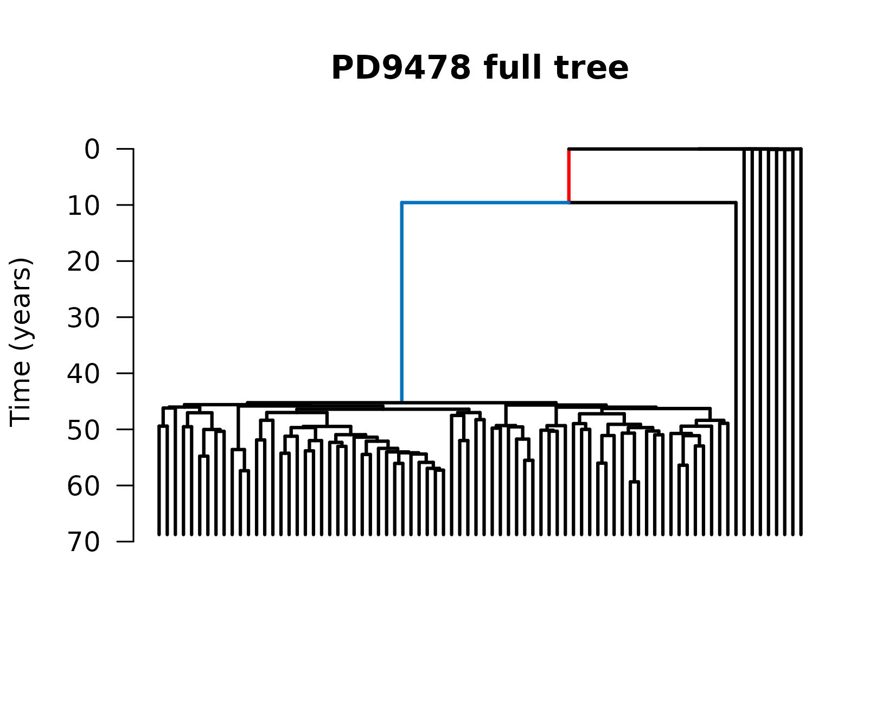
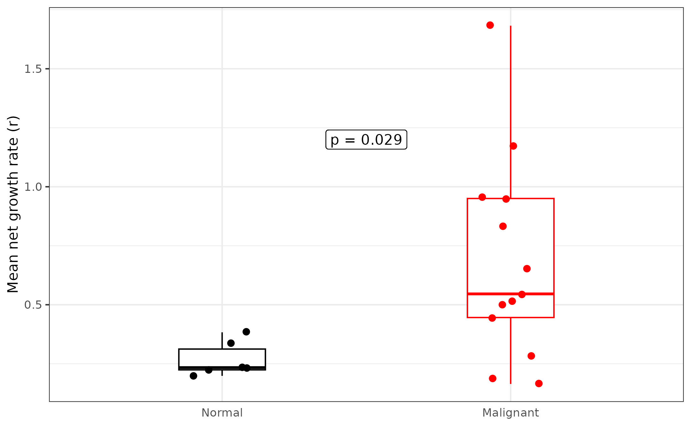
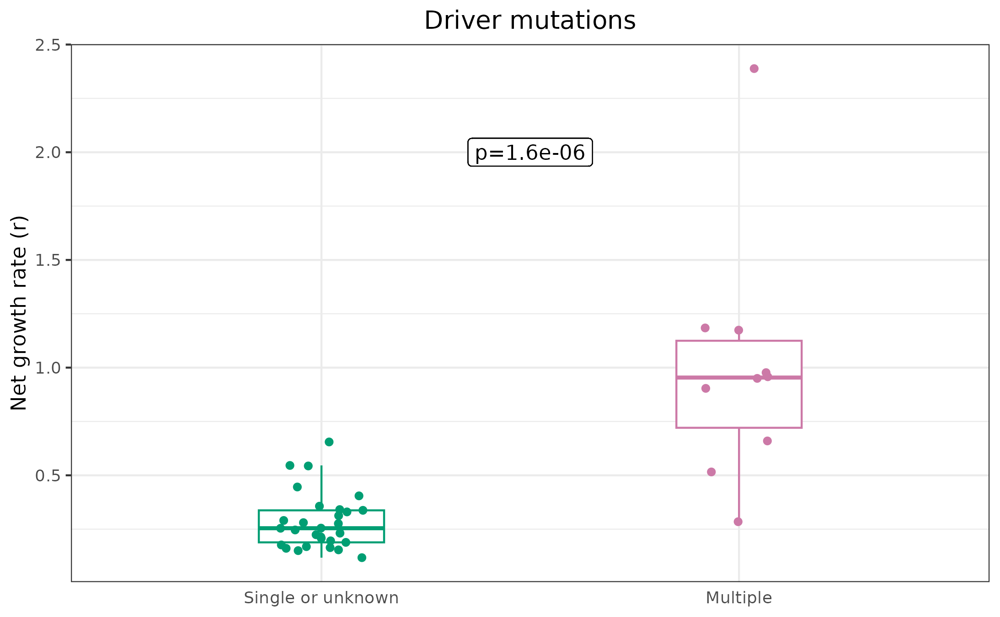
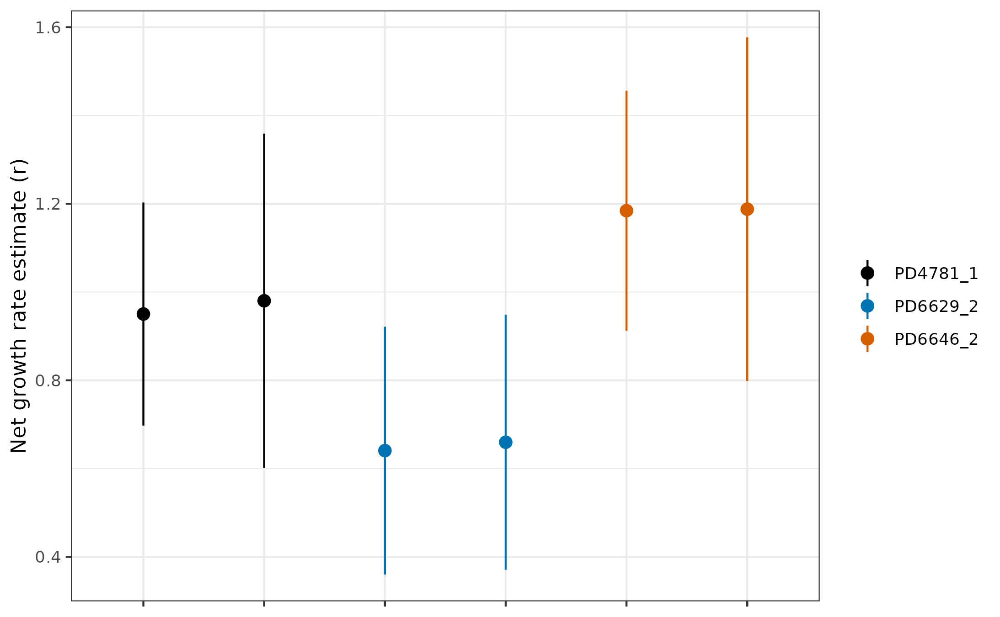

Analysis of human blood data
Source:vignettes/cloneRate-dataAnalysis.Rmd
cloneRate-dataAnalysis.RmdIn this vignette, we’ll walk through our data analysis corresponding to our recent preprint analyzing single-cell Whole Genome Sequencing (scWGS) data from four different papers. As part of this package, we have included everything needed to reproduce this analysis, which consists of reconstructed phylogenetic trees and de-identified metadata about the donors who were sequenced. We also include some longitudinal bulk Whole Genome Sequencing (bulk WGS) data which we use for validation.
Setup
First, we’ll have to load the packages we want to use. We’ll be
plotting the trees using the ape package function
ape::plot.phylo()
along with some other ape functions. If you have
cloneRate installed, you already have the ape package. We’ll
also be using ggplot2 to make
our plots, as well as survival, ggsurvfit,
and car for some
downstream analysis. All of these can be installed from CRAN as shown
below:
# Load and attach our package cloneRate
library(cloneRate)
# Load and attach ape
library(ape)
# Install ggplot2 if necessary, then load and attach it with library()
if (!requireNamespace("ggplot2")) {
install.packages("ggplot2")
}
library(ggplot2)
# Install survival if necessary, then load and attach it with library()
if (!requireNamespace("survival")) {
install.packages("survival")
}
library(survival)
# Install ggsurvfit if necessary, then load and attach it with library()
if (!requireNamespace("ggsurvfit")) {
install.packages("ggsurvfit")
}
library(ggsurvfit)
# Install car if necessary, then load and attach it with library()
if (!requireNamespace("car")) {
install.packages("car")
}
library(car)We’ll also set the colors which we’ll use for most of the plotting. The palette is taken from here
colorPal <- c("#000000", "#E69F00", "#56B4E9", "#009E73", "#F0E442", "#0072B2", "#D55E00", "#CC79A7")Data exploration
First, let’s examine realCloneData, which contains most
of the necessary data to reproduce our analysis.
summary(cloneRate::realCloneData)
#> Length Class Mode
#> fullTrees 30 -none- list
#> cloneTrees 42 -none- listThere are two lists contained in this dataset, one which contains the
full reconstructed tree for each individual at each timepoint (named
fullTrees), and one which contains specific clones from the
full trees (named cloneTrees). We require that a clone must
have at least n=10 tips (cells) to be included in
cloneTrees. We discuss this requirement in our simulation vignette. For now, let’s
split these into two different variables for clarity.
fullTrees.list <- cloneRate::realCloneData$fullTrees
cloneTrees.list <- cloneRate::realCloneData$cloneTreesFull trees
Let’s start by looking at the full tree from a single individual,
“PD9478”. Because some individuals in this study are sequenced at
multiple timepoints, we refer to the ID (“PD9478”) and timepoint (“_1”)
to get a specific tree from fullTrees.list. In this case,
the only timepoint is timepoint 1, so let’s take a look at the full tree
“PD9478_1”. This data comes from the work of Williams et al.
# Let's see the class of the tree
PD9478 <- fullTrees.list$PD9478_1
class(PD9478)
#> [1] "phylo"We see that the tree is of class phylo(http://ape-package.ird.fr/misc/FormatTreeR_24Oct2012.pdf),
which is a fairly straightforward encoding of phylogenetic trees in
R.
Let’s plot the tree:
# Plot the full tree from individual PD9478 at timepoint 1
PD9478 <- fullTrees.list$PD9478_1
# Plot, then add scale and title
plot.phylo(PD9478, direction = "downwards",
show.tip.label = FALSE, edge.width = 2,
edge.color = c(rep("black", 2), "red", "#0070C0", rep("black", (200))))
axisPhylo(side = 2, backward = FALSE, las = 1)
title(main="PD9478 full tree", ylab="Time (years)")
Clone trees
If you went through the simulation vignette, you’ll notice that this tree looks quite a bit different than the ones we simulated. In the above tree, there is a clear example of a somatic clonal expansion. We know from the authors who produced this data (see Williams et al. Fig. 3 PD9478), that all the sampled cells within this clone have a mutation in the JAK2 gene (which occurs along the red edge) and the DNMT3A gene (which occurs along the blue edge). Both of these mutations are known to be important in clonal expansions in blood. Let’s look more closely at the clone and see what we can learn from the tree.
# Load the clone tree from our cloneTrees.list
PD9478_subClone <- cloneTrees.list[["PD9478_1_clone1"]]
# Plot, then add scale and title
plot.phylo(PD9478_subClone, direction = "downwards",
show.tip.label = FALSE, edge.width = 2,)
axisPhylo(side = 2, backward = FALSE, las = 1)
title(main="PD9478 JAK2 & DNMT3A clone tree", ylab="Time (years)")Now this tree of the clonal expansion looks a lot more like the trees we simulate! This suggests that the growth rate of each cell within this clone is roughly the same as other cells within the clone. We can now apply our methods to the clone tree shown above!
Estimating growth rates
We see that the above tree is ultrametric and we know that it’s time-based, in units of years, so we should apply our [internalLengths()] and [maxLikelihood()] functions.
# Get maximum likelihood and internal lengths estimates
print(round(maxLikelihood(PD9478_subClone)$estimate, 3))
#> [1] 0.516
print(round(internalLengths(PD9478_subClone)$estimate, 3))
#> [1] 0.601Unfortunately, we don’t have a ground truth to compare to when working with real data. However, this individual clone has longitudinal sequencing data, which we can use to estimate an orthogonal growth rate. We’ll come back to this later (see Validation).
First, let’s apply our analysis to all of the clone trees. If we give
a list of phylo
objects, our growth rate functions will estimate the growth rate of all
of them separately, returning a data.frame with each row telling us the
result from each tree.
# Apply each of our estimates
resultsLengths <- internalLengths(cloneTrees.list)
#> Warning in FUN(X[[i]], ...): Tree is not binary. Birth-death branching trees should be binary,
#> but tree resonstruction from data may lead to 3+ descendants from
#> a single parent node. Proceed with caution! Input tree has
#> 3 nodes directly descending from a single
#> parent node. A binary tree would only have 2 descendant nodes
#> from each parent node. Tree throwing warning is PD5847_1_clone1
#> Warning in FUN(X[[i]], ...): Tree is not binary. Birth-death branching trees should be binary,
#> but tree resonstruction from data may lead to 3+ descendants from
#> a single parent node. Proceed with caution! Input tree has
#> 3 nodes directly descending from a single
#> parent node. A binary tree would only have 2 descendant nodes
#> from each parent node. Tree throwing warning is PD4781_1_clone1Oof! Looks like we have a warning…
It says that two of the trees we input “PD5847_1_clone1” and “PD4781_1_clone1” are not binary branching trees. This means that one node has more than 2 direct descendants. In this case, it’s not a big deal. We know that these trees are resconstructed from mutation data, so this could just mean that we picked up two divisions which happened without mutations occurring in between. Let’s plot one of them so we can see where this happens
# Plot, highlighting the 3 descendants of node 76. Then add scale and title
plot.phylo(cloneTrees.list$PD5847_1_clone1, edge.width = 2,
direction = "downwards", show.tip.label = FALSE,
edge.color = c(rep(1, 4), "darkorange", rep(1, 34),
"darkorange", rep(1, 6), "darkorange", rep(1, 1000)))
axisPhylo(side = 2, backward = FALSE, las = 1)
title(main="PD5847 clone 1 tree (multi-branching)", ylab="Time (years)")We can see the three descendants from a single node (node 76), which is identified by the edges in orange. We see that there are a lot of places where there are multiple splits (coalescence events) in quick succession, but this is the only place where 1 node appears to split into 3. Well, it’s okay, we know mutations are an imperfect way to keep track of time. If we saw more of these events where one node splits into 3, or cases where one node splits into 4+, we might be more concerned. In this case, we can move on. Our functions for growth rate estimation are equipped to handle trees like this, but they throw warnings so we know what’s happening. Let’s continue, applying our [maxLikelihood()] function to the trees.
resultsMaxLike <- suppressWarnings(maxLikelihood(cloneTrees.list))
# Preview the output
print(head(resultsMaxLike[, c(1:3)]))
#> lowerBound estimate upperBound
#> PD34493_clone1 0.09732233 0.1687267 0.2401312
#> PD34493_clone3 0.17680977 0.2316003 0.2863907
#> PD34493_clone4 0.09428111 0.1957285 0.2971758
#> PD41305_clone1 0.17392864 0.3301275 0.4863263
#> PD41305_clone2 0.15906481 0.2757690 0.3924733
#> PD41305_clone3 0.32741598 0.5434498 0.7594836
# Print correlation coefficient of the estimates from the two methods
print(stats::cor.test(resultsLengths$estimate, resultsMaxLike$estimate)$estimate)
#> cor
#> 0.9829619Not bad! With a correlation coefficient around 0.98, the estimates from each method agree very well.
Understanding the function outputs
Each of the functions ([maxLikelihood()] and [internalLengths()]) returns a data.frame with the same columns, and we’ll walk through what the columns mean here:
# Check that column names are the same
stopifnot(all(colnames(resultsMaxLike) == colnames(resultsLengths)))
# Print column names
colnames(resultsMaxLike)
#> [1] "lowerBound" "estimate" "upperBound"
#> [4] "cloneAgeEstimate" "sumInternalLengths" "sumExternalLengths"
#> [7] "extIntRatio" "n" "alpha"
#> [10] "runtime_s" "method" "cloneName_result"-
lowerBound,estimate,upperBound: These are the growth rate estimate and confidence intervals. The default is 95% confidence intervals, but this can be adjusted by setting thealphaparameter in the function input. -
cloneAgeEstimateis the estimate of the time from clone initiation to sampling. The earliest coalescence time in the clone tree gives us a rough estimate of the clone age, and then we add \(1/r\),which is 1 divided by the growth rate estimate, to account for the expected time from initiation to the first surviving division (first coalescence). We’ll discuss this more later. -
sumInternalLengths,sumExternalLengths,extintRatio: These are the sum of the internal edge lengths, external edge lengths, and the ratio between the two. We use this ratio to say whether enough time has passed to use our method (see simulation vignette). Fortunately, all of our real data has a ratio > 3, so we can apply our methods to all of the clone trees. -
nis the number of tips in the clone tree. In this case, this corresponds to the number of cells sequenced from the clone. -
alphais the confidence level. The default is 0.05, and we use1-alpha(default 95%) confidence intervals for the upper and lower bounds. -
runtime_sis the runtime of the method in seconds. -
methodis the method used, which helps if we want to combine data.frames from different methods for plotting. -
cloneName_resultis a unique name for the clone corresponding to the individual ID and clone number. For individuals from the Williams paper, where some individuals were sampled at multiple timepoints, the ID will be followed by “_1”, “_2”, or “_3” to indicate the timepoint.
Downstream analysis
Metadata
Now that we have growth rates, let’s make some sense of them. If we look inside cloneTrees.list, we realize that we also have metadata. Let’s print two examples, one from an individual with a Myeloproliferative Neoplasm (MPN), and one without:
# Show the metadata of an individual without MPN
print(cloneTrees.list$PD34493_clone1$metadata)
#> ID age cloneName_meta cloneDriver diagnosis.age malnorm sourcePaper
#> 1 PD34493 83 PD34493_clone1 SF3B1:k666n_DelY NA Normal fabre
# And the metadata of an individual with MPN
print(cloneTrees.list$PD9478_1_clone1$metadata)
#> ID age cloneName_meta cloneDriver
#> 1 PD9478_1 68.75291 PD9478_1_clone1 JAK2:p.F537_K539delinsL_AND_DNMT3A:p.Y908*
#> diagnosis.age malnorm sourcePaper
#> 1 53 Malignant williamsFor a biological and/or clinical analysis, the most important of these are:
-
agewhich tells us the individual’s age at the time of sampling. We know that clonal hematopoiesis is associated with aging. -
cloneDriverwhich tells us the clonal hematopoiesis driver which likely leads to the expansion. -
diagnosis.agewhich tells us when the individual was diagnosed with Myeloproliferative Neoplasm (MPN). If the individual doesn’t have MPN,diagnosis.ageisNA. -
malnormwhich tells us whether the individual has been diagnosed with a Myeloproliferative Neoplasm (MPN). This information is already conveyed indiagnosis.age, but it’s sometimes easier to work with in this format.
Let’s combine all of the cloneTrees.list metadata into
one data.frame, so we can analyze it together with the results of
running our functions.
# Combine all metadata into a single data.frame
metadataAll <- do.call(rbind, lapply(cloneTrees.list, function(x) {
return(x$metadata)
}))Let’s join the data.frames containing the metadata and the results.
We can use base::cbind() because we know the order of the
metadata is the same as the order of the results data.frame. We can
check this by comparing the cloneName_result and
cloneName_meta columns, which should be (and are) the
same.
# Combine metadata with estimates using cbind. Check if cloneNames match
resultsLengthsMeta <- cbind(resultsLengths, metadataAll)
stopifnot(resultsLengthsMeta$cloneName_result == resultsLengthsMeta$cloneName_meta)
resultsMaxLikeMeta <- cbind(resultsMaxLike, metadataAll)
stopifnot(resultsLengthsMeta$cloneName_result == resultsLengthsMeta$cloneName_meta)
# Because max. likelihood performs slightly better, use that going forward
results <- resultsMaxLikeMetaWe’ll go forward with our analysis using the results data.frame, which contains the estimates from the [maxLikelihood()] function and the metadata. In the simulation vignette, we show that the maximum likelihood estimate performs the best.
Recreating figures
Here, we recreate the analysis in Figure 5E-G of our work. These are just a few of many analyses that can be done with this data, so don’t be limited by what we do.
If we split the cohort by MPN and normal, we might expect differences in the growth rates. Because the number of sampled cells, on average, is higher in the healthy individuals due to study design differences, we’re likely to pick up more clones from the healthy individuals. To avoid this bias as much as possible, we’ll compare the mean growth rate between individuals with and without MPN.
First, we want to avoid double counting the clones which appear twice. There are three such clones from the Williams paper:
# If patient ID and clone number are the same, even if timepoint
# differs, then we have a duplicate.
# Make a new column for patient, removing anything after "_" from cloneName_result
results$patient <- gsub("_.*", "", results$cloneName_result)
results$cloneNumber <- gsub(".*_clone", "", results$cloneName_result)
# Combining patient ID (without timepoint) and clone number
# will give us a unique ID for the clone regardless of sampling time
results$uniqueCloneID <- paste0(results$patient, "_", results$cloneNumber)
# Find which clone IDs appear twice
tmp <- table(results$uniqueCloneID)
repeatsVec <- names(tmp)[tmp == 2]
# Remove the duplicate with fewer number of cells sequenced, n
rowsRemove <- c()
for (cloneID in repeatsVec) {
duplicateRows <- which(results$uniqueCloneID == cloneID)
removeIndex <- duplicateRows[which.min(results$n[duplicateRows])]
rowsRemove <- c(rowsRemove, removeIndex)
}
uniqueResults <- results[!c(1:nrow(results)) %in% rowsRemove, ]
# Check that each unique clone now only appears once (no duplicates)
stopifnot(all(table(uniqueResults$uniqueCloneID) == 1))For now, our uniqueResults dataframe contains the
results with only one clone from each duplicated pair. Later on, when we
want to validate our estimates, we’ll make use of the fact that we have
data from different timepoints but the same clone, showing that our
methods make consistent estimates regardless of which sampling time we
use. More on that in the Validation
section.
MPN vs. Normal (Fig. 5E)
Now, let’s take the mean for each individual and re-create Fig. 5E.
# Get the unique individuals, and initialize vectors
uniqueIndividuals <- unique(uniqueResults$patient)
individualMeans <- c()
malNorm <- c()
# Fill vectors with mean growth rate and MPN status of each individual
for (ind in uniqueIndividuals) {
individualMeans <- c(individualMeans, mean(uniqueResults$estimate[uniqueResults$patient == ind]))
malNorm <- c(malNorm, uniqueResults$malnorm[uniqueResults$patient == ind][1])
}
# Combine results into a data.frame
mal_vs_norm.df <- data.frame(
"Patient" = uniqueIndividuals,
"meanEstimate" = individualMeans,
"malNorm" = malNorm
)
# Run a non-parametric Mann-whitney test to see if they're significantly different
nonparamTest <- wilcox.test(meanEstimate ~ malNorm, data = mal_vs_norm.df)
print(nonparamTest)
#>
#> Wilcoxon rank sum exact test
#>
#> data: meanEstimate by malNorm
#> W = 64, p-value = 0.02853
#> alternative hypothesis: true location shift is not equal to 0
# Set factor ordering for plot and plot using ggplot (Fig. 5E)
mal_vs_norm.df$malNorm <- factor(mal_vs_norm.df$malNorm, levels = c("Normal", "Malignant"))
ggplot(mal_vs_norm.df, aes(x = malNorm, y = meanEstimate)) +
geom_label(label = paste0("p = ", round(nonparamTest$p.value, 3)), x = 1.5, y = 1.2) +
geom_boxplot(width = 0.3, aes(color = malNorm), outlier.shape = NA) +
geom_jitter(aes(x = malNorm, y = meanEstimate, color = malNorm), width = .1, size = 2) +
scale_color_manual(values = c("black", "red"), labels = c("Normal", "MPN")) +
theme_bw() +
ylab("Mean net growth rate (r)") +
xlab("") +
theme(
legend.position = "none",
axis.ticks.x = element_blank(), axis.title.x = element_blank()
)
Single vs. multi-driver (Fig. 5F)
Taking our results from unique clones, uniqueResults,
let’s compare growth rates from clones with either an unknown driver or
a single driver, to those with multiple drivers. For this, we’ll notice
a handy convention in the metadata: drivers are separated with “AND”, so
any clone with “AND” in the driver column, has multiple drivers:
# Set the multi driver variable according to whether multiple drivers are annotated
uniqueResults$multiDriver <- "Single or unknown"
uniqueResults$multiDriver[grepl("AND", uniqueResults$cloneDriver)] <- "Multiple"
# Run a non-parametric test to see if the differences are significant
nonParamTest <- wilcox.test(estimate ~ multiDriver, data = uniqueResults)
print(nonParamTest)
#>
#> Wilcoxon rank sum exact test
#>
#> data: estimate by multiDriver
#> W = 276, p-value = 1.554e-06
#> alternative hypothesis: true location shift is not equal to 0
# Set factor levels to control plot order
uniqueResults$multiDriver <- factor(uniqueResults$multiDriver, levels = c("Single or unknown", "Multiple"))
# Plot (Fig. 5F)
ggplot(uniqueResults, aes(x = multiDriver, y = estimate)) +
geom_boxplot(width = 0.3, aes(color = multiDriver), outlier.shape = NA) +
geom_jitter(aes(x = multiDriver, y = estimate, color = multiDriver), width = .1) +
scale_color_manual(values = c(colorPal[4], colorPal[8])) +
theme_bw() +
geom_label(label = paste0("p=", round(nonParamTest$p.value, 7)), x = 1.5, y = 2) +
ylab("Net growth rate (r)") +
xlab("") +
ggtitle("Driver mutations") +
theme(
legend.position = "none", axis.ticks.x = element_blank(),
axis.title.x = element_blank(), plot.title = element_text(hjust = .5)
)
Time from clone initiation to diagnosis (Fig. 5G)
We discussed before that our results data.frame (the output of [internalLengths()] or [maxLikelihood()]) came with a clone age estimate, which was \(1/r\) + the time from sampling back to the first coalescence. If the birth rate of a clone is \(a\) and the death rate is \(b\), then the net growth rate is \(r=a-b\). The first coalescence represents the first surviving division because, if neither of the offspring of a division die out, they’ll account for, on average, half the cells in the clone. This means that even if we sample only 10 cells, we’re very likely to sample at least one descendant from each of the two offspring, meaning that first surviving division should be the earliest coalescence, relative to the time of sampling. How do we know when the first surviving division occurs? Well, we know:
- the birth rate is \(a\)
- the probability of survival of a given individual is \((a-b)/a\) or \(r/a\)
- This leads to a rate of surviving divisions equal to \(a*r/a = r\). Therefore, the expected waiting time from clone initiation to first surviving division is \(1/r\).
With that out of the way, let’s see if the growth rate tells us anything about the time from clone initiation to diagnosis. For this, we want to use the max. growth rate from each patient, as that’s the one which we’d assume to be most likely to drive MPN initiation. We don’t understand MPN very well though, so an alternative could be to use the most recently emerged clone prior to diagnosis. We’ll do both here, showing that they actually give the same results, probably because any clone which arises later in life must be fit enough to out-compete other clones which have already expanded.
# Get the clone IDs of the fittest clone in each patient
cloneIDs_max <- sapply(unique(uniqueResults$patient), function(x) {
patient.df <- uniqueResults[uniqueResults$patient == x, ]
cloneID <- patient.df$cloneName_result[which.max(patient.df$estimate)]
cloneID
})
# Get the clone IDs of the youngest clone in each patient
cloneIDs_youngest <- sapply(unique(uniqueResults$patient), function(x) {
patient.df <- uniqueResults[uniqueResults$patient == x, ]
cloneID <- patient.df$cloneName_result[which.min(patient.df$cloneAgeEstimate)]
cloneID
})
# See how much overlap there is between the most recent clone and the highest growth rate
table(cloneIDs_max == cloneIDs_youngest)
#>
#> FALSE TRUE
#> 4 15We see that in 15/19 cases, the youngest clone (with >= 10 tips) is also the most fit. First, let’s use the most fit clones and stratify by the mean, reproducing our result in Figure 5G.
# Subset the results to only have the fittest clone for each patient
maxResults <- uniqueResults[uniqueResults$cloneName_result %in% cloneIDs_max, ]
# Subset to the MPN patients
malMax <- maxResults[maxResults$malnorm == "Malignant", ]
# Determine time from clone initiation to diagnosis
malMax$latency_to_dx <- malMax$cloneAgeEstimate - (malMax$age - malMax$diagnosis.age)
# Stratify the population by the mean growth rate, adding a column "aboveMean"
malMax$aboveMean <- malMax$estimate > mean(malMax$estimate)
# Use the survival package to see if differences are significant
malMax$status <- 1
survivalTest <- survival::survdiff(survival::Surv(time = latency_to_dx, event = status) ~ aboveMean, data = malMax)
print(survivalTest$pvalue)
#> [1] 0.002628379
# Plot survival curves
survfit2(Surv(time = latency_to_dx, event = status) ~ aboveMean, data = malMax) %>%
ggsurvfit() +
labs(
y = "Probability diagnosis-free",
x = "Time from clone initiation (yrs.)"
) + scale_color_manual(values = c(colorPal[7], colorPal[3])) +
theme(legend.position = "none") +
geom_label(label = paste0("p = ", round(survivalTest$pvalue, 4)), x = 45, y = .85, color = "black", fill = "white") +
geom_label(label = "r < mean", x = 40, y = .375, color = colorPal[7], fill = "white") +
geom_label(label = "r > mean", x = 12, y = .35, color = colorPal[3], fill = "white")
Because we don’t fully understand clonal hematopoiesis and MPN, it’s reasonable to wonder whether using the fittest clone is the best way to compare time to diagnosis. As an alternative, let’s compare the youngest clones, seeing if our growth rate estimates still stratify the time to diagnosis.
youngestResults <- uniqueResults[uniqueResults$cloneName_result %in% cloneIDs_youngest, ]
# Subset to the MPN patients
malYoungest <- youngestResults[youngestResults$malnorm == "Malignant", ]
# Check how much overlap there is between youngest clone and fittest clone in the MPN dataset
table(malYoungest$cloneName_result == malMax$cloneName_result)
#>
#> TRUE
#> 13As it turns out, the youngest clone is the fittest clone in all 13 individuals diagnosed with MPN. We saw before that this was the case in 15 of the 19 individuals when including the healthy individuals.
Validation
Remember when we said that there were three cases of duplicate clones? Well, if our estimates are worth anything, they must be consistent. This means that, in these three clones, we should expect that the estimates are similar at both timepoints. Let’s check this:
# Like before, we can find which clone IDs appear twice
tmp <- table(results$uniqueCloneID)
repeatsVec <- names(tmp)[tmp == 2]
# Subset the results to include only repeated clones
repeatResults <- results[results$uniqueCloneID %in% repeatsVec, ]
# Plot the repeated clones
ggplot(repeatResults) +
geom_pointrange(data = repeatResults, aes(
x = cloneName_result, y = estimate, ymin = lowerBound,
ymax = upperBound, color = uniqueCloneID
)) +
scale_color_manual(values = colorPal[c(1, 6, 7)]) +
theme_bw() +
ylab("Net growth rate estimate (r)") +
theme(axis.text.x = element_blank(), axis.title.x = element_blank(), legend.title = element_blank())
Not too bad! It’s good to be consistent, but it’s better to be consistent and accurate. For that, we need a completely orthogonal way to measure clonal growth rates, which comes from longitudinal data. One of the clones from the Williams paper and two of the clones from the Fabre paper have matching longitudinal data. We have formatted this nicely and it comes with the package!
Let’s now fit a logistic curve to the longitudinal data and estimate the growth rate for one of these clones, from individual PD9478, which is the tree we showed at the beginning of this vignette. Here, we are recreating some of the analysis from our Figure 6.
# Get data from PD9478
PD9478_long <- longitudinalData[longitudinalData$Sample.ID == "PD9478", ]
# Get a rough estimate for starting params
startingParams <- suppressWarnings(coef(lm(logit(VAF / .5) ~ Age, data = PD9478_long)))
# Fit to a three parameter logistic curve
fit <- nls(VAF ~ K / (1 + exp(-(phi2 + r * Age))),
start = list(K = 0.2, phi2 = min(c(-0.000001, startingParams[1])), r = max(c(0.00001, startingParams[2]))),
data = PD9478_long, trace = FALSE, algorithm = "port", lower = c(0, -500, 0.00001), upper = c(0.5, 0, 5)
)
# Set output equal to summary of longitudinal models
output <- summary(fit)
# Assign fitted params
r <- output$coefficients["r", 1]
t_m <- -output$coefficients["phi2", 1] / r # Get midpoint time by dividing by -1/r
K <- output$coefficients["K", 1]
# Get CI for growth rate of longitudinal/logistic model
stdError <- output$coefficients["r", "Std. Error"]
lb <- r - 1.96 * stdError
ub <- r + 1.96 * stdError
# Prepare a df for plotting the fit line along with the data
x <- c((min(PD9478_long$Age) - 10):(max(PD9478_long$Age) + 10)) # construct a range of x values bounded by the data
y <- K / (1 + exp(-(x - t_m) * r)) # curve VAF (3 param model)
predict.df <- data.frame("x" = x, "y" = y)
# Set color for longitudinal fit info
fitColor <- colorPal[6]
# Plot
ggplot(PD9478_long, aes(x = Age, y = VAF)) +
theme_bw() +
coord_cartesian(xlim = c(min(x), max(x)), ylim = c(-0.01, 0.52), expand = 0) +
labs(x = "Person Age (yr)", y = "Variant Allele Frequency (VAF)") +
ggtitle(gsub("_", " & ", paste0(PD9478_long$Sample.ID[1], " ", PD9478_long$Gene[1]))) +
geom_line(data = predict.df, aes(x = x, y = y), color = fitColor, linewidth = 1, show.legend = TRUE) +
geom_point(color = "#808080", shape = 18, size = 1.5) +
geom_vline(xintercept = t_m, linetype = "dotted", color = fitColor, linewidth = .6) +
geom_hline(yintercept = K, linetype = "dotted", color = fitColor, linewidth = .6)Now, let’s see how the estimate compares with our maximum likelihood estimate:
# Get the single cell estimate from PD9478 clone 1
scPD9478 <- results[results$cloneName_result == "PD9478_1_clone1", ]
# Combine orthogonal estimates into one df for plotting
combine.df <- data.frame(
"Clone" = "PD9478_1_clone1",
"r" = c(r, scPD9478$estimate),
"lowerBound" = c(lb, scPD9478$lowerBound),
"upperBound" = c(ub, scPD9478$upperBound),
"method" = c("longitudinal", "max. likelihood")
)
# Plot
ggplot(combine.df) +
geom_pointrange(aes(x = method, y = r, ymin = lowerBound, ymax = upperBound)) +
theme_bw() + theme(axis.title.x = element_blank())+
ylab("Net growth rate (r)")All in all, not too bad! For now, we’ll leave the others for you to explore. This vignette has already been a bit long. But now you should have the tools to reproduce our analysis relating to the real data aspect of our paper. Hopefully you were able to do this in minutes and hours, which is much better than the months it took me!
References / Data sources:
Any real world data we include is produced and annotated in these fascinating papers, which have advanced the capabilities of single-cell DNA sequencing. They also provide excellent analysis in addition to what we provide here and in our work.
The mathematical methods for estimating growth rates build in large part from the work of Amaury Lambert in:
And here’s a final link to our paper for more of the details of the methods and data analysis.
If you enjoyed the color palette for the plotting, we tried to use colorblind friendly colors, specifically pulling colors from a palette designed by Bang Wong and available here.